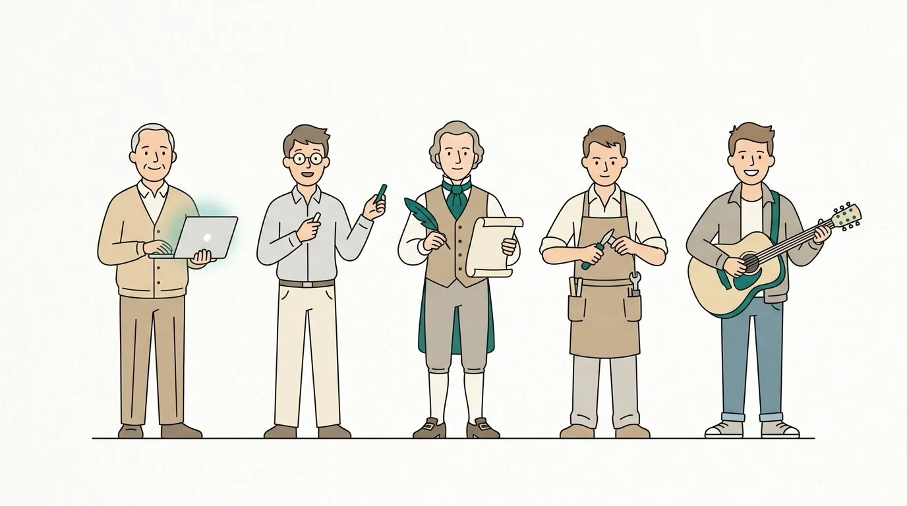

Chapter 03 · Making It Yours
Personas — Choosing a Voice
The same facts can bore you or delight you depending on who’s telling them. A persona is the narrator BookBank writes in — the tone, the analogies, the way a hard idea gets unpacked. Pick a persona and the whole book takes on that character’s way of thinking. This very book is in The Clear Mentor’s voice: example-first, warm, practical.

A friendly, minimal flat-vector illustration on a bright off-white background: a small "cast" of five distinct narrator characters standing in a row like a line-up, each a simple stylized figure with one prop that hints at their voice — a patient mentor with a laptop, a curious physicist with a chalk stick, a period scientist with a quill, a maker with a small hand tool, and a musician with a guitar. Thin confident linework, one calm teal accent (#0f766e) plus soft warm neutrals, lots of whitespace, no text labels baked in. ~1200x675px, 16:9 landscape; keep the figures centred with safe margins, it is letterboxed into a 16:9 box.
Generate with your image agent, then drop the file here.
What a persona actually is
Delightfully, a persona is just a tiny JSON file. It has three fields, and the one that
does the work is voice — a short instruction that steers how everything is written:
clear-mentor.json{ "id": "clear-mentor", "name": "The Clear Mentor", "tagline": "A patient senior engineer, example-first", "voice": "Write like a patient senior engineer pair-programming with the reader. Lead with a runnable example, then explain why it's designed that way. Call out the gotchas, the foot-guns, and the production trade-offs. Warm, concise, and practical." }
The narrators that ship in the box
BookBank comes with a small cast you can use by id straight away:
| id | Who they are |
|---|---|
| clear-mentor | A patient senior engineer, example-first. (This book.) |
| feynman | Playful first-principles curiosity; explains from the ground up. |
| isaac-newton | A formal, classical natural-philosopher’s cadence. |
| the-crafter | Calm, incremental, hands-on — builds understanding step by step. |
| the-guitarist | A musician’s ear — rhythm, feel, and practice-first. |
Where personas come from
When a book names a persona id, BookBank looks for it in three places, and the first match wins. This cascade is what lets you override a built-in voice, or add your own, without touching the plugin:
Rolling your own
Want a book narrated by an over-caffeinated lab partner? Write a file. Drop
lab-partner.json into your per-user folder and reference it by id:
~/.claude/bookbank/personas/lab-partner.json{ "id": "lab-partner", "name": "The Lab Partner", "tagline": "Breathless, curious, always mid-experiment", "voice": "Write like an excited lab partner who just found something cool. Short bursts, lots of 'wait, look at this', but always land the real explanation. Never sacrifice accuracy for enthusiasm." }
Where we are
A persona is a three-field JSON whose voice steers the writing. You get a built-in cast, a
three-tier cascade to override or extend it, and the option to just describe a voice inline. Now let’s
give the book its look.
Try it
- Write a one-sentence
voicefor a narrator you’d love to learn from. Keep it under 40 words. - Which built-in persona would suit a book on music theory? On operating systems? Why?
write-book skill — “Personas & themes” cascade; built-in persona files under bookbank/defaults/personas/.